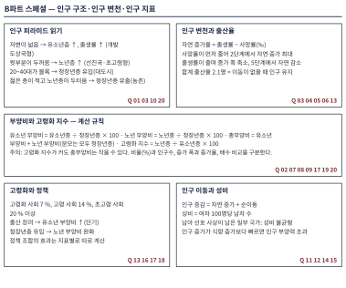

| 번호 | 정답 | 난도 | 핵심 개념 | 핵심 근거 |
|---|---|---|---|---|
| 01 | ② | D3 | 피라미드 모양과 부양비의 관계 | (가)는 저변이 넓은 개발 도상국형으로 유소년 부양비가 크고 노년층 비율과 고령화 지수가 낮음. (나)는 노년층이 두터운 선진국형. |
| 02 | ① | D4 | 부양비와 고령화 지수의 계산 | B: 41.5+12.3=53.8, 고령화 지수 29.6. C: 22.7+28.8=51.5, 고령화 지수 126.7. 노년 부양비 비는 2.3배, 고령화 지수 비는 4.3배. |
| 03 | ③ | D4 | 인구 구조 변화와 자연 증가율의 관계 | 자연 증가율 (가)24‰, (나)13‰, (다)1‰. 총부양비는 (가)약 88.7, (다)약 51.5로 (가)가 더 큼. (다)의 사망률은 (가)보다 낮음. |
| 04 | ④ | D4 | 인구 변천 자료의 해석 | 자연 증가율 3, 19, 15, 4, −2(‰). 처음 50년 동안 출생률 1 ‰, 사망률 17 ‰ 감소. 150년 차는 +4 ‰로 여전히 자연 증가. |
| 05 | ② | D4 | 인구 변천 단계와 인구 구조의 결합 | (가)는 사망률이 급감해 자연 증가가 가장 큰 시점(R), (나)는 출생률이 떨어지기 시작해 자연 증가가 줄어드는 시점(P), (다)는 출생률이 사망률보다 낮아진 시점(Q). |
| 06 | ② | D4 | 합계 출산율과 대체 수준 | A는 유지 수준(2.1)의 절반, D는 1.5배. B는 2.1에 미달하여 이동이 없다면 장기적으로 인구가 줄어듦. |
| 07 | ③ | D5 | 부양비의 장기 추이 계산 | 총부양비 51.5→72.4→100.0(증가 폭 20.9, 27.6). 60년 후 노년 부양비 84.0, 고령화 지수 525. |
| 08 | ③ | D4 | 유소년·노년 부양비의 크기 비교 | (가)35.0, (나)15.0, (다)18.75, (라)37.5. |
| 09 | ④ | D5 | 인구 전망 그래프의 종합 해석 | 총인구 50→45백만 명(−10 %), 청장년층 비율 72 %→48.9 %(−23.1 %p), 노년 부양비 22.2→90.9(4.1배). 노년층 증가 폭은 4, 3, 2, 2, 1백만 명으로 줄어듦. |
| 10 | ③ | D4 | 인구 이동이 인구 구조에 미치는 영향 | E는 20~40대가 두터운 유입형, F는 젊은 층이 적고 노년층이 두터운 유출형. |
| 11 | ④ | D5 | 자연 증가와 순이동의 분해 | 180→270만 명(+90), 순이동 90−20=+70. 청장년층 증가 70만 명은 증가분의 약 77.8 %이고, 유소년·노년층 증가 합은 6+14=20만 명. |
| 12 | ① | D4 | 성비 불균형과 남아 선호 사상 | X 560÷440×100≈127.3, Y 255÷245×100≈104.1. 남아 선호 사상이 남아 있는 일부 국가에서 성비 불균형이 발생함. 255<280이므로 ㄹ 거짓. |
| 13 | ② | D4 | 출산 장려 정책과 합계 출산율 | A 1.2→1.3→1.5, B 1.2→1.1→1.0, C 1.2→1.5→1.3. 세 나라 모두 2.1 미만이며, 자료가 인과를 입증하지는 않음. |
| 14 | ⑤ | D3 | 인구 부양력과 개발 도상국의 인구 과잉 | 1인당 식량 지수 121÷134≈0.90. 인구 증가가 더 빨라 인구 부양력이 부족해진 상태. |
| 15 | ⑤ | D3 | 대륙별 연령 구조 비교 | 고령화 지수 아프리카 8.75, 아시아 37.5, 유럽 118.75. |
| 16 | ① | D4 | 고령화의 속도 | 7 %→14 %는 2000→2018년(18년), 14 %→20 %는 2018→2025년(7년). 2010년은 10.8 %로 고령화 사회. |
| 17 | ① | D5 | 인구 정책 조합의 효과 비교 | 총부양비 현 추세 72.4, (가)75.4, (나)63.9, (다)61.3. 노년 부양비 55.2, 52.6, 45.9, 38.7. (나)는 9.3 %p 낮음. |
| 18 | ⑤ | D3 | 국가별 인구 문제와 정책의 대응 | (가)는 개발 도상국형 인구 과잉, (나)는 선진국형 저출생·고령화. |
| 19 | ⑤ | D4 | 인구 지표 풀이의 오류 진단 | 노년 부양비는 청장년층(600)으로 나눔: 150÷600×100=25, 총부양비 15+25=40. (라) 고령화 지수는 옳음. |
| 20 | ④ | D5 | 개발 도상국형과 초고령형 인구 구조의 비교 | 유소년 부양비 83.0 대 17.2(4.8배), 노년 부양비 5.7 대 55.2(9.8배), 고령화 지수 6.8 대 320(약 47배), 총부양비 88.7 대 72.4. |
